45 OCR entries (duplicates kept).
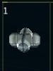
1
Fuel Converter
A fuel converter is a remarkable piece of equipment that can transform
hydrogen molecules into fuel It connects to the tractor beam system and
fuel tank to directly deposit the converted fuel into the tank.
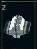
2 Mantis Jump Drive Unknown/Experimental
Rumors suggest there is an experimental model of jump drive that uses
a completely different technology for distances of well over five sectors.
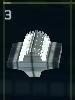
3 Fulcrum Drive C1 Short Range
A class 1 Fulcrum jump drive is the entry level model. It is capable
of jumps up to about one sector away.
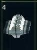
4 Fulcrum Drive C2 Moderate Range
The class 2 Fulcrum jump drive is capable of jumps up to about two
sectors away.
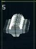
5
Fulcrum Drive C3 Medium Range
The class 3 Fulcrum jump drive is capable of jumps up to about three
sectors away.
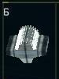
6
Fulcrum Drive C4 Long Range
The class 4 Fulcrum jump drive is capable of jumps up to about four
sectors away.
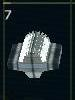
7 Fulcrum Drive C5 Very Long Range
The class 5 Fulcrum jump drive is capable of jumps up to about five
sectors away.
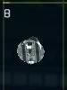
8 Cargo Scanner C1 Class 1 Cargo Scanner
A class 1 cargo scanner is capable of detecting the identity of cargo
(either in open space or in a ship's cargo bay) at a range of about 500.
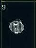
9 Cargo Scanner C2 Class 2 Cargo Scanner
A class 2 cargo scanner is capable of detecting the identity of cargo
(either in open space or in a ship's cargo bay) at a range of about 1000.
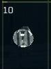
10 Cargo Scanner C3 Class 3 Cargo Scanner
A class 3 cargo scanner is capable of detecting the identity of cargo
(either in open space or in a ship's cargo bay) at a range of about 1500.
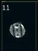
11 Cargo Scanner C4 Class 4 Cargo Scanner
A class 4 cargo scanner is capable of detecting the identity of cargo
(either in open space or in a ship's cargo bay) at a range of about 2000.
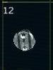
12 Cargo Scanner C5 Class 5 Cargo Scanner
A class 5 cargo scanner is capable of detecting the identity of cargo
(either in open space or in a ship's cargo bay) at a range of about 2500.
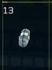
13 Cannon Relay Sys Increases Capacity
The cannon relay system increases the energy capacity of an installed
particle cannon. It works by storing extra power in a network of capacitors
between firing cycles, supplying sufficient reserves to fire using 25%
less energy.
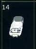
14 Mine/Tractor Beam Cargo/Mining Tool
The mining and tractor beams let you mine for valuable material, recover
cargo from destroyed ships, retrieve hydrogen molecules from stars and
nebulae, and recover items from cargo containers. There is a general
purpose device and three material specific devices (metal ore, diamonds,
and platinum).
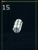
15 Shield Battery X1 1 cell, +50
Shield batteries are the power storage component of the shield system.
They are a series of capacitors that store energy for each shield array.
A single shield battery cell provides basic storage capacity for the
shield system.
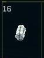
16 Shield Battery X2 2 cells, +100
Shield batteries are the power storage component of the shield system.
They are a series of capacitors that store energy for each shield array.
Two shield battery cells provide low level storage capacity for the shield
system.
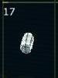
17 Shield Battery X3 3 cells, +150
Shield batteries are the power storage component of the shield system.
They are a series of capacitors that store energy for each shield array.
Three shield battery cells provide moderate level storage capacity for
the shield system.
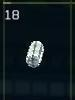
18 Shield Battery X4 4 cells, +200
Shield batteries are the power storage component of the shield system.
They are a series of capacitors that store energy for each shield array.
Four shield battery cells provide high level storage capacity for the
shield system.
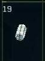
19 Shield Battery X5 5 cells, +250
Shield batteries are the power storage component of the shield system.
They are a series of capacitors that store energy for each shield array.
Five shield battery cells provide maximum level storage capacity for
the shield system.
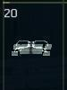
20 Repair Sys C1 Class 1, Slow
Repair devices automatically repair subsystem and hull damage in-flight.
Installing one of these means you don't have to dock and pay for repairs.
A class 1 repair device provides basic repair capabilities.
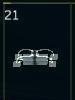
21 Repair Sys C2 Class 2, Medium
Repair devices automatically repair subsystem and hull damage in-flight.
Installing one of these means you don't have to dock and pay for repairs.
A class 2 repair device provides medium level repair capabilities.
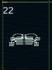
22 Repair Sys C3 Class 3, Fast
Repair devices automatically repair subsystem and hull damage in-flight.
Installing one of these means you don't have to dock and pay for repairs.
A class 3 repair device provides maximum repair capabilities.
23 Stealth Generator Stealth Generator
A stealth generator is a reusable piece of equipment that uses a ship's
shield arrays to generate a stealth field. The stealth generator cloaks
the ship visually and prevents it from being detected by sensors for up
to around 180 seconds.
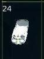
24 Metal Mining Beam Cargo/Mining Tool
The mining and tractor beams let you mine for valuable material, recover
cargo from destroyed ships, retrieve hydrogen molecules from stars and
nebulae, and recover items from cargo containers. There is a general
purpose device and three material specific devices (metal ore, diamonds,
and platinum).
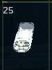
25 Diam Mining Beam Cargo/Mining Tool
The mining and tractor beams let you mine for valuable material, recover
cargo from destroyed ships, retrieve hydrogen molecules from stars and
nebulae, and recover items from cargo containers. There is a general
purpose device and three material specific devices (metal ore, diamonds,
and platinum).
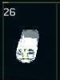
26 Plat Mining Beam Cargo/Mining Tool
The mining and tractor beams let you mine for valuable material, recover
cargo from destroyed ships, retrieve hydrogen molecules from stars and
nebulae, and recover items from cargo containers. There is a general
purpose device and three material specific devices (metal ore, diamonds,
and platinum).
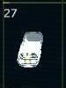
27 Repair Beam Repair Beam
The repair beam can repair ships or station/city modules. It must make
contact with a ship or module in order to perform repairs. A repair beam
uses a ship's tractor beam slot, so it can't be used at the same time
as a mining/tractor beam.
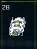
28 Anti-Missile System Destroys Missiles
The anti-missile system is a semi-effective beam weapon that targets
an inbound missile as it approaches your ship. It fires an invisible
beam of laser energy at the missile in an attempt to heat it up and cause
it to explode before it reaches your ship.
29 Shield Recharger Recharges Shield Arrays
The shield array recharger works as an energy transfer system and provides
additional shield energy to arrays that become critical by routing power
from the main energy system to the shield system.
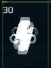
30 Auto CM Launcher Auto-Launches CMs
The automatic CM launcher does exactly what the name implies. It will
begin launching CM's as soon as a missile approaches effective countermeasure
range. It can be wasteful with CM's, so pilots should train to use this
system most effectively to minimize CM loss.
31 Cannon Heatsink Improves Firing Rate
The cannon heatsink helps keep primary particle cannons cooler during
their firing cycles, allowing them to fire at significantly faster rates.
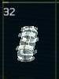
32
Deploy Constructor
The deploy constructor enables you to place temporary hangar stations,
repair stations, sensor stations, fuel processors, shield arrays, mining
probes, and jump casters. Metal ore is required to construct deployable
structures and items.
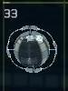
33 Build Constructor
The build constructor enables you to place space station and city modules.
Such structures can introduce new trade routes, docking points, inventories,
and storage options. Metal ore is required to construct these structures.
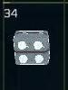
34 Afterburner Drive
The afterburner drive (also sometimes referred to as the afterburner
overdrive) uses energy from your ship's main power system for additional
thrust. It can improve afterburner performance about 35-70%, depending
on frame and engine configuration, but can only operate for short bursts
due to its ship energy dependency.
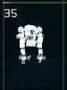
35 Terrain Walker
Terrain walkers provide an effective exploration and mining platform
for planetary surfaces. A built-in mining system can recover material
roughly five times faster than typical mining beams available to spacecraft.
Although not designed for combat, these machines do come equipped with
powerful particle cannons and shield arrays.
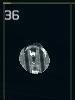
36 Target Scanner
Target scanners provide additional information on targeted ships (engine,
resistor packs, hull plating, module type, and wing class) and asteroids
(mineable materials) when in range (target detail display). Planet terrain
can also be scanned at close range and detected mineable materials are
shown on the lower right section of the HUD.
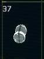
37 Escape Pod
Escape pods provide life support for a pilot who ejects. They include
food, water, and air for up to a week.
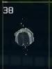
38 Satellite
Satellites are used to provide communication, weather, security, and
entertainment services for the inhabitants of planets and moons. They
are often cloaked from visual and sensor detection once activated.
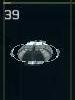
39 LR Radar
LR Radar is a device that extends the range of your ship's radar/sensor
system from a 25K to a 50K limit. Only ships are detected above 25K,
which are marked with yellow blips. No target detail information can
be displayed above 25K.
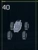
40
Terrain Rover
Terrain rovers provide a high speed exploration and mining platform
for planetary surfaces. The rover has gravity and thruster stabilizers
to reduce the chance of getting stuck and an energy based suspension system
that insulates against drops/impacts. It also includes four wheel steering,
shields, and a particle cannon.
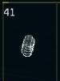
41 Shield Modifier P
Shield modifiers adjust the frequency and energy patterns of your ship's
shield system to better protect against specific weapon types. A particle
modifier reduces particle damage by about 10%.
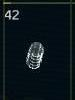
42 Shield Modifier B
Shield modifiers adjust the frequency and energy patterns of your ship's
shield system to better protect against specific weapon types. A beam
modifier reduces beam damage by about 20%.
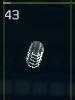
43
Shield Modifier M
Shield modifiers adjust the frequency and energy patterns of your ship's
shield system to better protect against specific weapon types. A missile
modifier reduces missile damage by about 10%.
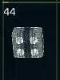
44
Thruster Overdrive
The thruster overdrive system improves overall thruster performance
by about 10%.
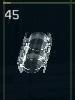
45 Solar Recharger
The solar recharger captures energy from light sources and helps recharge
your ship's energy system faster. Ambient and reflected light provides
about a 2.5% base improvement while being close to a star can provide
100% or more improvement.